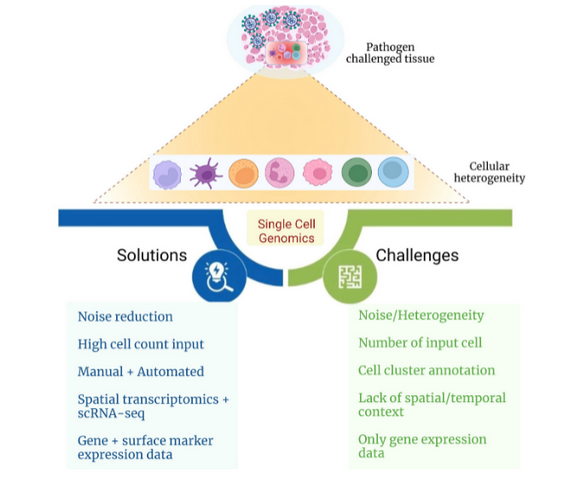

Recap
Recentemente fiz uma apresentação pra NeuroTechXBSB, com intuito de destrinchar o trabalho de bioinformatica na grande area da neurociencia, resolvi postar no meu blog. Porém todos esses contéudos serão disponibilizados no instagram @neurotechbsb, caso tenham interesse por esse tema, além de disponibilizarem contéudos que ligam a neurociência com varias outras areas.
A complexidade do cérebro
O cérebro é provavelmente o sistema mais complexo que a gente conhece.
Bilhões de células, trilhões de conexões, e ainda assim tentamos entender como isso tudo gera pensamento, memória, comportamento.
Só que tem alguns problemas:
Nem sempre as variantes genéticas explicam as doenças de forma direta.
O mesmo gene pode fazer coisas diferentes dependendo da célula.
E muitas vezes, alterações no DNA não aparecem claramente como sintomas.

No fim, fica a pergunta que guia boa parte da pesquisa: como ligar genes, células e comportamento?
Onde entram os dados?
É aqui que a bioinformática entra como cola entre diferentes tipos de informação.
- Genômica (GWAS, SNPs): procura variações genéticas ligadas a doenças.
- Transcriptômica (RNA-seq bulk e single-cell): mostra quais genes estão ativos.
- Epigenômica (ChIP-seq, ATAC-seq, Hi-C): revela como o DNA é regulado e dobrado em 3D.
- Bancos populacionais (GTEx, ENCODE, PsychENCODE): comparam perfis entre indivíduos.
Cada camada sozinha dá uma pista. Juntas, elas contam uma história muito mais completa.
Mapeando o cérebro em escala molecular
O artigo “Comprehensive functional genomic resource and integrative model for the human brain (D, Wang)” analisou 1.866 cérebros humanos adultos para montar um atlas molecular.
Foram reunidos dados de:
- RNA (quais genes estão ativos)
- Estrutura 3D do DNA (Hi-C)
- Variações genéticas (genótipo)
- Marcas epigenéticas (regulação química)
O resultado é um mapa de referência que ajuda a entender como diferentes doenças mexem com o cérebro.
Como organizar essa bagunça de dados?
Os pipelines de bioinformática geralmente seguem um caminho:
- Limpeza e normalização dos dados brutos.
- Identificação de genes mais ou menos ativos.
- Separação de sinais de tipos celulares (deconvolução).
- Descoberta de regiões do DNA ligadas à expressão (QTLs).
- Criação de modelos preditivos.
É basicamente transformar toneladas de dados em hipóteses biológicas que podem ser testadas no laboratório.
O poder do single-cell
Em vez de olhar o cérebro como um bolo inteiro, dá pra cortar em fatias muito finas e analisar célula por célula.
Isso importa porque: - O cérebro tem dezenas de tipos celulares diferentes. - Algumas doenças afetam só um subconjunto bem específico.
No estudo, mais de 32 mil células foram analisadas, e foi possível identificar perfis como neurônios excitatórios (Ex1–Ex9), inibitórios (In1–In8), astrócitos, microglia e por aí vai.
Assim a gente consegue enxergar quem faz o quê no cérebro.

Deconvolução: traduzindo o “bulk”
Nem sempre dá pra analisar célula por célula. A saída é usar dados single-cell como referência para decompor os dados “bulk”.
Exemplo: - Certos neurônios (Ex3, Ex4) aumentam com a idade. - Oligodendrócitos e microglia diminuem. - 88% da variação da expressão gênica pode ser explicada só pela composição celular.
Ou seja: às vezes o que parece uma “mudança genética” é, na verdade, uma mudança na proporção dos tipos de células.

Esquizofrenia como exemplo
O trabalho “Comprehensive functional genomic resource and integrative model for the human brain (D, Wang)” analisou 142 regiões do genoma (loci GWAS) e conseguiu identificar 321 genes funcionais relacionados com esquizofrenia.
Entre eles: CHRNA2, CACNA1C e GRIN1.
O curioso é que 67% desses genes estavam longe das variantes (SNPs) encontradas no DNA.
Eles só apareceram porque a análise considerou o DNA em 3D e os mecanismos de regulação à distância.

Sem bioinformática, isso passaria batido.
Modelos preditivos
Com todos esses dados, dá pra ir além da descrição e partir pra predição.
Exemplo: DSPN (Deep Structured Phenotype Network) - Integra genótipo, transcriptoma e QTLs. - Consegue prever expressão gênica e risco de doenças. - Já foi aplicado em esquizofrenia, autismo e bipolaridade.
A ideia é transformar mapas moleculares em ferramentas úteis para diagnóstico e até terapias.
Conclusões
- A bioinformática conecta DNA, células e doenças.
- Mostra que contexto celular e regulatório importa.
- Ajuda a revelar alvos terapêuticos que antes eram invisíveis.
- Dá base pra criar modelos que podem personalizar tratamentos.
O futuro da neurociência computacional está justamente nessa mistura de Big Data + Biologia para decifrar a lógica molecular do cérebro.